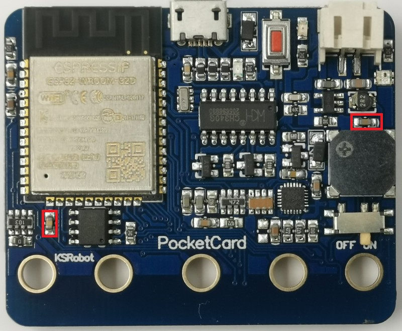
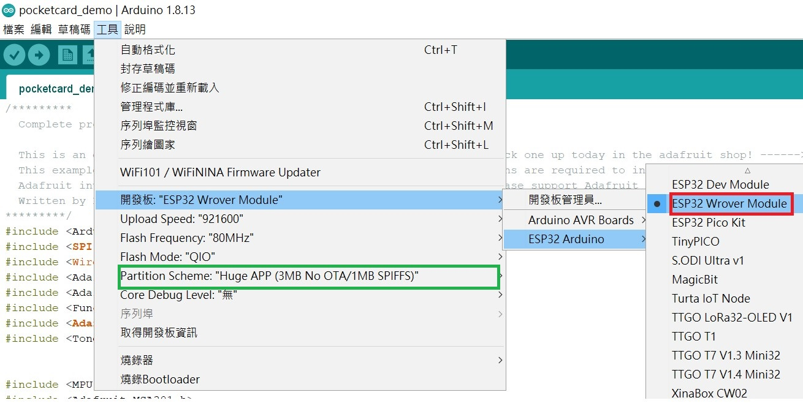
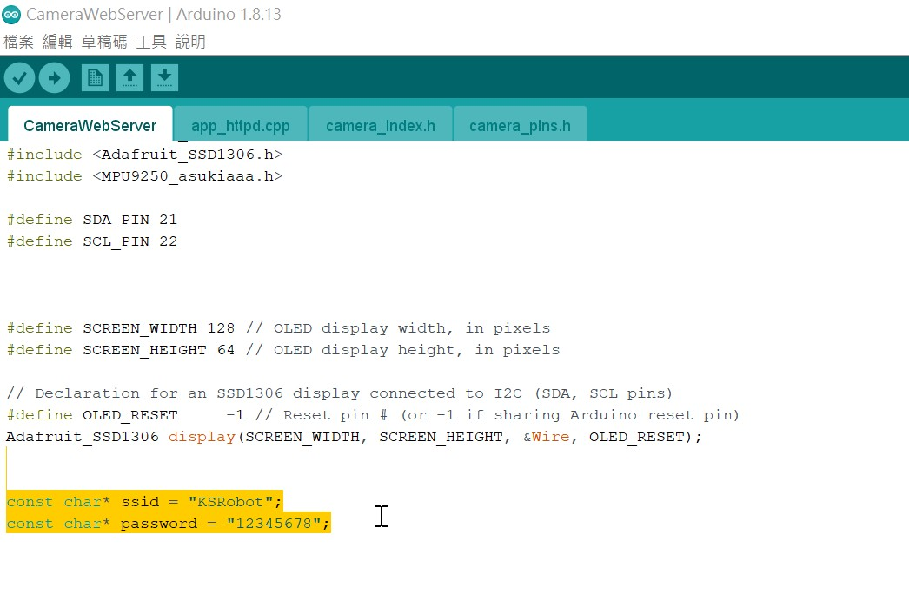
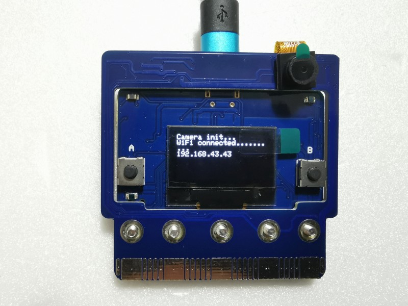
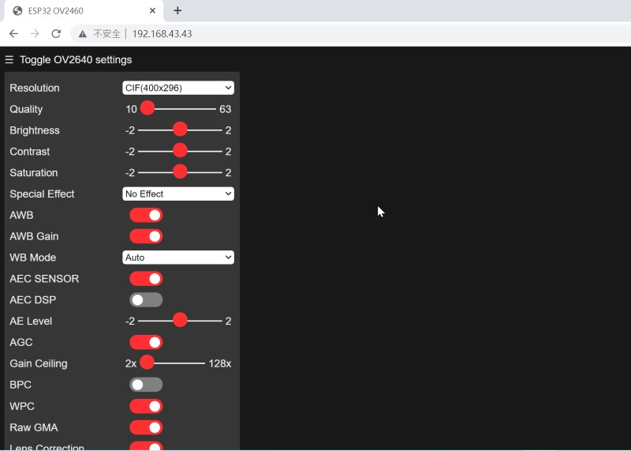
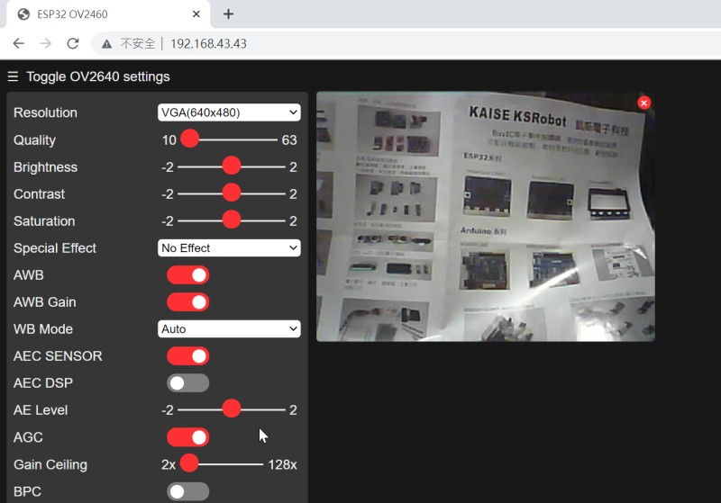
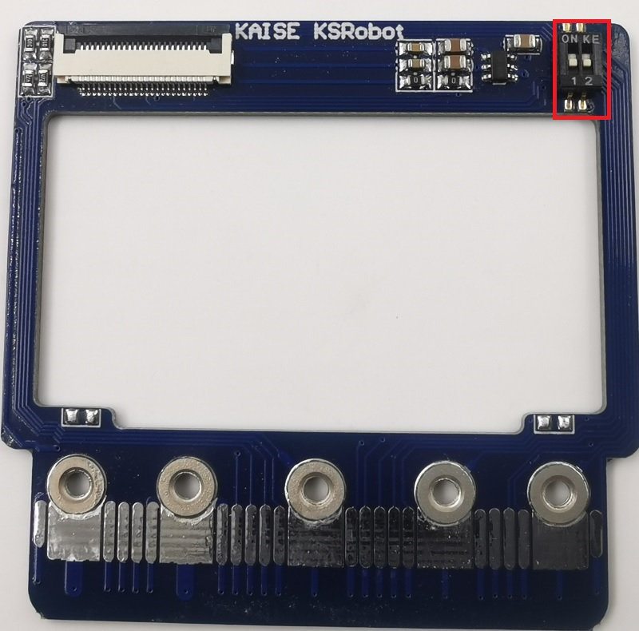
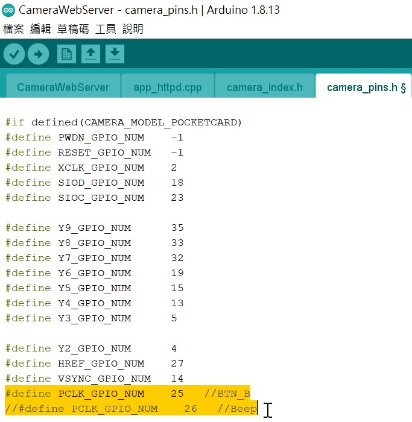
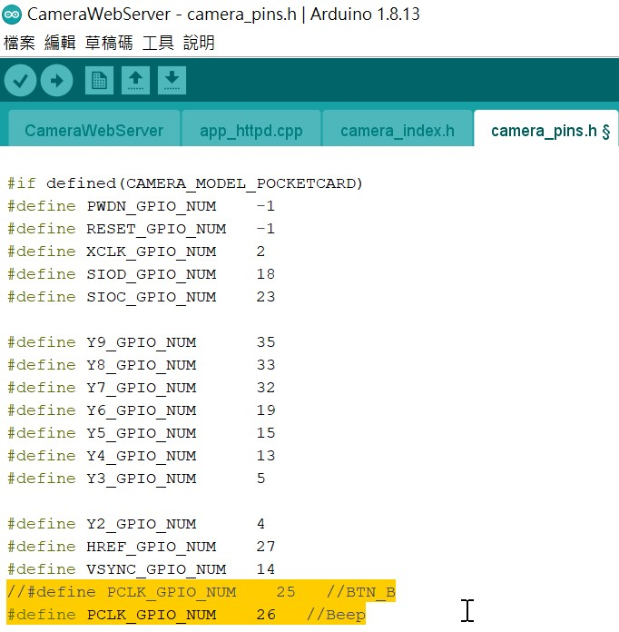

PocketCard Camera Extension Board
1. 主板版本確認
PocketCard MPU9250的V1 版本沒有PSRAM 8MB，容量太小，所以會編譯不過
PocketCard MPU9250的V2 版本，第一批生產時有2顆電容要解焊掉（紅框位置）才可以使用Camera 擴展板，其它批生產沒有這個問題，可以直接組裝
PocketCard Lite 可以直接組裝

2. 組裝
先按照 組裝影片 組裝好
3. 燒錄程式
啟動 Arduino IDE ，開發板設定值「Partition Scheme」 請一定要選 「Huge APP」

打開範例的 「CameraWebServer」
設定 你自己的AP 的SSID 和 Password，再下載執行

4. 執行測試
PocketCard Camera 若組裝和AP 設定沒有問題時，重新啟動成功時會出現如下畫面，畫面中出現的IP 就是PocketCard Camera 的IP 位置

使用手機或筆電的瀏覽器輸入上面的IP 位置，會出現下面WEBCAM 的設定畫面

按下「Start Stream」就會出現攝影畫面

5. 其它注意事項
PocketCard Camera 使用的腳位很多，所以micro:bit Edge 那的腳位只剩下IIC 腳位可以應用，其它腳位使用完了。板載的感測器 溫度,亮度A,亮度B 可以使用，但 按鈕A 使用在 Camera 腳位，所以不能使用。蜂鳴器 和 按鈕B 也必順拿一個給 Camera 使用，所以使用指撥開關來做選擇，預設是把 按鈕B 給Camera 腳位使用，保留 蜂鳴器 功能。如果實做過程中要使用到 按鈕 B，請自行修改程式和指撥開關來更改設定。
指撥開關位置如下

出貨預設(保留 蜂鳴器功能，按鈕B 不能用)是 指撥1 往下撥，指撥2 往上撥，程式如下

如果要保留 按鈕B ，則蜂鳴器就不能用 ，請更改為 指撥1 往上撥，指撥2 往下撥，程式更改如下

再重新編譯上傳就行。